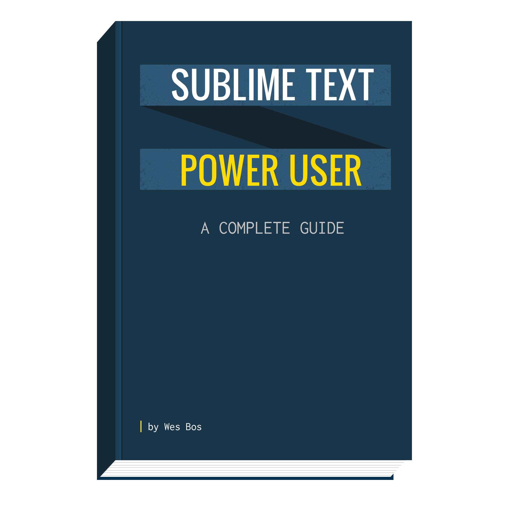
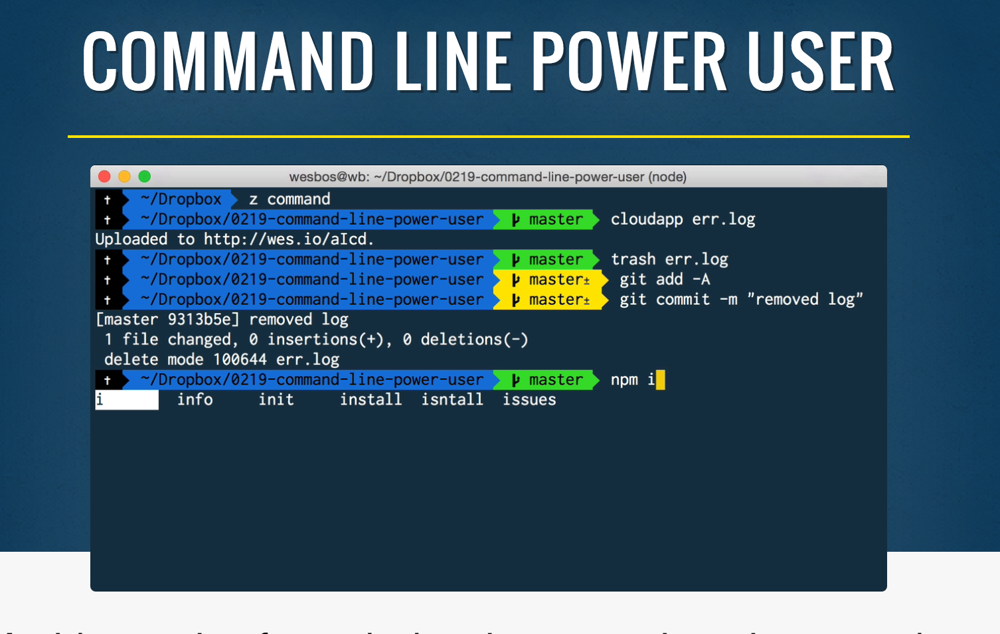
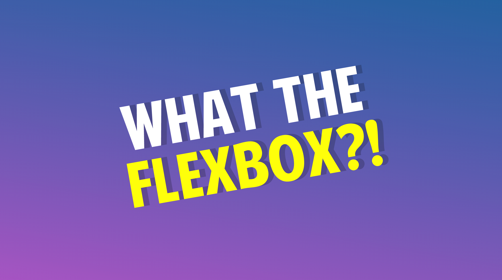
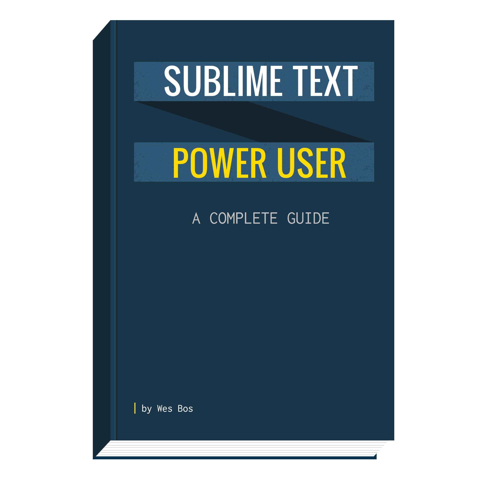
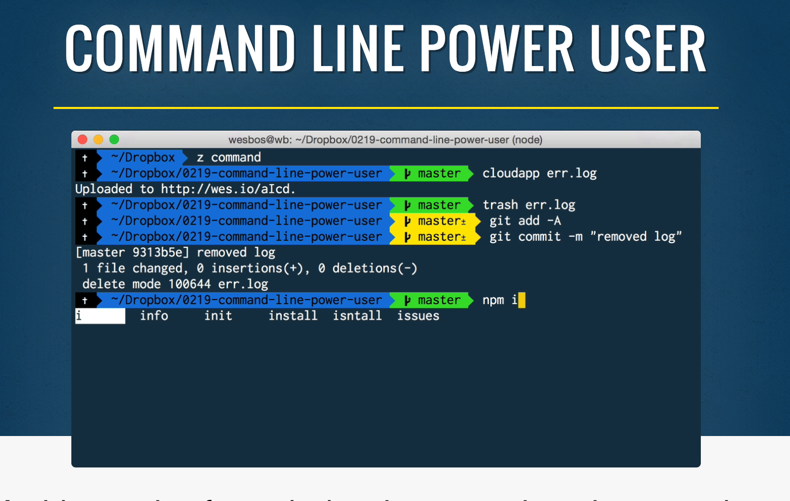
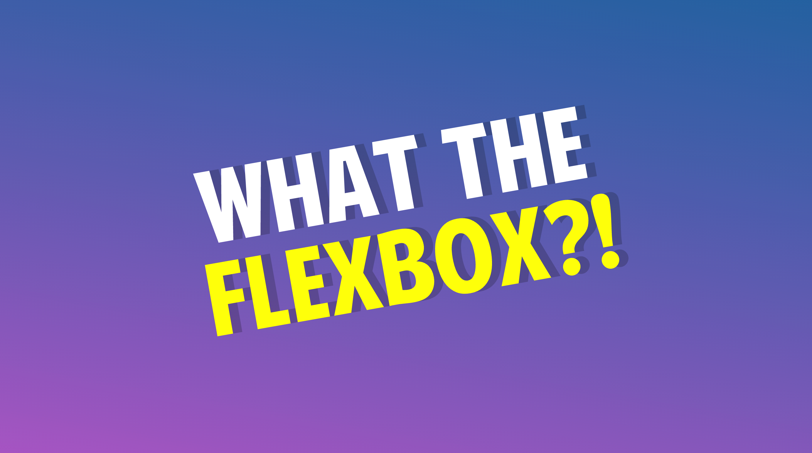

What's New
In JavaScript?
wesbos.com@wesbosI'm
Wes Bos
These slides will be available shortly after this talk
I'll tweet the link out.

 ES6.io
ES6.io ReactForBeginners.comSublimeTextBook.comCommandLinePowerUser.comflexbox.io
ReactForBeginners.comSublimeTextBook.comCommandLinePowerUser.comflexbox.ioJavaScript is Always Evolving
ES6
ES2016 (ES7)
ES2017 (ES8)
New DOM Apis
This Talk
Reaaaady?
Let's go!
Promises
Not brand new, but let's do a quick review
Promises are an IOU for something that will happen in the future
- AJAX call returning data
- Access to a User's webcam
- Resizing an image
All of these things take time, we simply kick off the process and move along with our lives.
But why do we do it this way?
JavaScript Waits for no one!
Almost Everything Is Asynchronous
Let's say we wanted to do a few things:
- Make Coffee
- Drink Coffee
- Cook Breakfast
- Eat Breakfast
Do you need to finish making coffee before you can Start Breakfast?
Would it make sense to wait until coffee is made and consumed before we even start cooking breakfast?
No - we want to start one thing, come back to it once it's finished, and deal with the result accordingly!

Most new browser APIs are build on Promises, or Observables
More on Observables in a bit
Most new browser APIs are build on Promises, or Observables
More on Observables in a bit
fetch()

Axios

Many, many more
PaymentRequest, getUserMedia(), Web Animation API
It's easy to make your own too!


Christmas Tree Callback Hell


we get it
Promises are great.
buuuuuuttt
What's the deal with .then()?
It's still kinda callback-y
Any code that needs to come after the promise still needs to be in the final .then() callback :\
Async + Await
Async + Await still is promises, but with a really nice syntax

Let's break it down
JavaScript is almost entirely asynchronous / non-blocking
great! - But it's hard to read/write
PHP

JS

😕😕😕
The PHP is easier to read
The JS is more performant
I'm not really happy
Synchronous looking code, without the wait.
How does it work?
1. Mark it as Async

2. await inside your async fn

Best of Both Worlds!
Another Example
Slow...

Why wait for Wes?
Remember, async+await is just promises

Error Handling
A few options (which we don't have time for)...
Done with Async+ Await!
Let's see more new stuff!
Intersection Observer
How do you know when an element is on screen?
With Intersection Observer, you can be alerted when an element is fully or partially scrolled into or out of view.
Uses
- Animate elements in on scroll
- Play video on scroll in
- Lazy Load images only when scrolled
- Record views for ads beyond the fold
- Use with sticky headers
Google DevelopersReady for Meta?
How does it work?!
1. Setup some Options

2. Create an empty Observer

3. Give it a callback

4. Observe Away!


Payment Request API
Every single online store needs to reinvent the checkout form.
We're all just trying to do the same thing - collect payment info from the user.
The Payment Request is a standardized browser API to collect billing and shipping information from your users.
 [Google Developers]
[Google Developers]So, Does the Browser Charge Your Card?
getUserMedia()
Not new at all

BUT
Safari Doesn't give a shit
September 2017 / iOS11
playsinline and getUserMedia()
Promise Based!


Resize Observer
per-element resize events!

Gateway Drug to Element Queries!

WOWOWOWOWOW!
Some cool stuff!
Thanks
Folks!
@wesbosWesBos.com